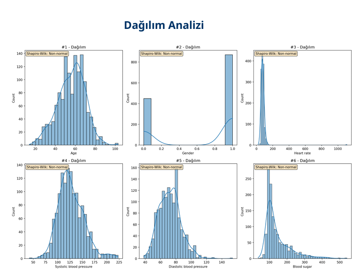
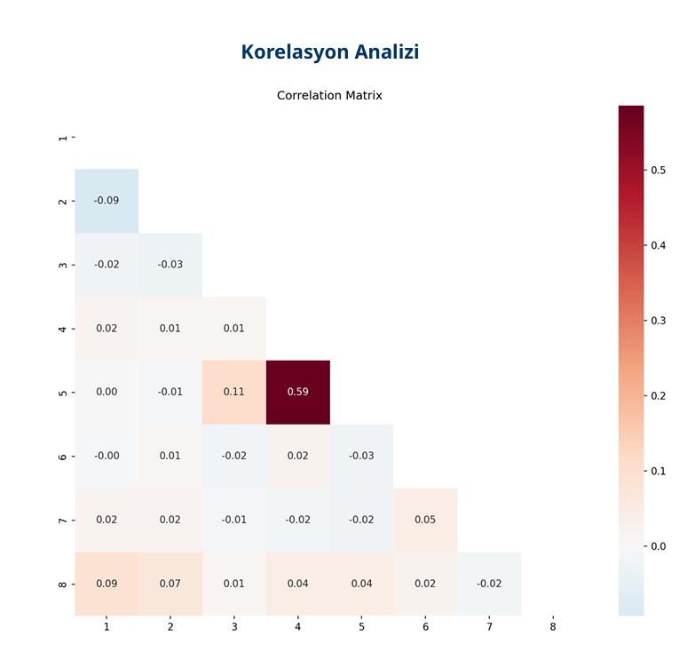
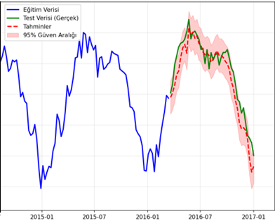
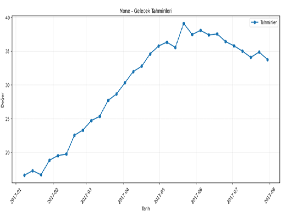

VERİNİZLE
DÜŞÜNEN
SİSTEM
Türkçe dil anlayışı için iyileştirilmiş LLM altyapısı. Dosya havuzundan bilgi çekimi, veri analizi ve gerçek zamanlı model eğitimini tek platformda yönetin.
Farklı Amaçlar İçin Farklı Modlar
Günlük konuşmadan gerçek zamanlı model eğitimine kadar üç ayrı mod; her biri belirli bir iş ihtiyacı için tasarlandı.
Konuşma Asistanı
Şablonlar, dosya havuzu ve serbest konuşma aynı akışta çalışır. Türkçe dil modeli bağlamı tutarak uzun konuşmaları takip eder.
- Dosya havuzundan kaynaklı yanıt
- Hazır şablonlarla iş akışı
- Türkçe dilbilgisine uyumlu çıktı
- Bağlamsal bellek ile tutarlı konuşma
Veri Analizi
Excel veya metin dosyanızı yükleyin; sistem veri üzerinde bir analiz raporu oluşturur. İstatistikler ve yorumlar otomatik üretilir.
- Excel / CSV / TXT dosya desteği
- İstatistiksel özet çıkarma
- Anomali ve trend tespiti
- Türkçe rapor ve yorum üretimi


Gerçek Zamanlı Tahmin
Tablo verinizi yükleyin; sistem özellik seçimi yaparak modeli gerçek zamanlı eğitir. Eğitim tamamlandıktan sonra model üzerinden tahmin yapılabilir.
- Otomatik özellik seçimi ve ön işleme
- Gerçek zamanlı model eğitimi
- Eğitilen modelle interaktif tahmin
- Model performans metrikleri
R²=0.86 · RMSE=2.04 · MAPE=%6.36
Trend: Artış · 30 dönem


Modların Ötesinde
Üç ana modun yanında; yönetici paneli, paylaşımlı dosya havuzu ve kişisel not defteri kurumsal kullanımı destekler.
Şablon Yönetimi & LLM Yanıtları
Admin sayfasında hazır şablon kütüphanesi oluşturun. Her şablon üzerinden doğrudan LLM yanıtı alın; tekrar eden iş akışlarını standart bir yapıya kavuşturun.
Ortak Bilgi Tabanı
Yüklenen belgeler paylaşımlı bir havuzda tutulur. Kullanıcılar LLM aracılığıyla bu dosyalar üzerinden bilgiye ulaşır. Erişim, kullanıcının yetki seviyesine göre belirlenir.
Kim Neye Erişebilir?
Sistemde her kullanıcının ne yapabileceği önceden tanımlanır. Yetki seviyesi yüksek kullanıcılar gelişmiş yapay zeka özelliklerine erişirken, standart kullanıcılar yalnızca kendi iş akışlarına ait araçları görür.
Buna Rol Tabanlı Erişim Kontrolü denir. Kısaca şu anlama gelir: her kullanıcıya bir rol atanır ve o rol hangi sayfalara girileceğini, hangi yapay zeka özelliklerinin kullanılacağını, hangi dosyaların görüleceğini belirler. Birisi hata yapsa bile yetkisiz bir alana erişemez. Sistem buna izin vermez.
Sistem Yöneticisi
Platforma tam erişim. Kullanıcıları, rolleri ve LLM yapılandırmasını yönetir.
Yönetici 1
Grubunu yönetir, dosya havuzuna yazabilir. LLM parametrelerini değiştiremez.
Yönetici 2
Dosya havuzuna yazabilir, şablon oluşturabilir. Kullanıcı yönetimi ve LLM parametreleri dışındadır.
Standart Kullanıcı
Temel konuşma, dosya sorgulama ve şablon kullanımı. Yönetim araçlarına erişimi yoktur.
Not: Roller ve izinler kurumun yapısına göre özelleştirilebilir. Yukarıdaki seviyeler varsayılan yapıyı gösterir; bir kullanıcı birden fazla role sahip olabilir veya belirli bir özellik için istisna tanımlanabilir.
Bu Sistemin Farkı Ne
Genel amaçlı yapay zeka araçları her dilde benzer kalitede çalışır. Bu sistem Türkçe kullanım ve kurumsal veri altyapısı için ayrıca geliştirildi.
Verileriniz Sizin
Yüklediğiniz dosyalar ve not defteri içerikleri yalnızca sizin sisteminizdedir. Üçüncü parti eğitim verisi olarak kullanılmaz.
Kod Gerektirmez
Veri bilimi ekibi olmadan tahmin modeli eğitin. Gerçek zamanlı eğitim süreci teknik detayları kullanıcıdan soyutlar.
Ekip Geneli Kullanım
Paylaşımlı dosya havuzu ve şablon kütüphanesiyle farklı departmanlar aynı bilgi tabanından yararlanır.
Rol Bazlı Kontrol
Kim neyi göreceği, hangi modlara erişeceği sistem üzerinden tanımlanır. Yetki yönetimi merkezi ve denetlenebilir yapıda çalışır.
Genel Araçlardan Farklar
| Özellik | Bu Sistem | Genel LLM Araçları |
|---|---|---|
| Türkçe için özel optimizasyon | ✓ | ✗ |
| Kurumsal dosya havuzu entegrasyonu | ✓ | Kısıtlı |
| Gerçek zamanlı model eğitimi | ✓ | ✗ |
| Otomatik veri analizi raporu | ✓ | Kısıtlı |
| Kişisel gizli not defteri | ✓ | ✗ |
| Rol tabanlı erişim kontrolü (RBAC) | ✓ | ✗ |
| Şablon tabanlı admin yönetimi | ✓ | ✗ |
| Kod yazmadan tahmin modeli | ✓ | ✗ |
İletişime Geç
Sistemi kendi verileriniz üzerinde denemek veya sorularınızı iletmek için ekibimize ulaşın.